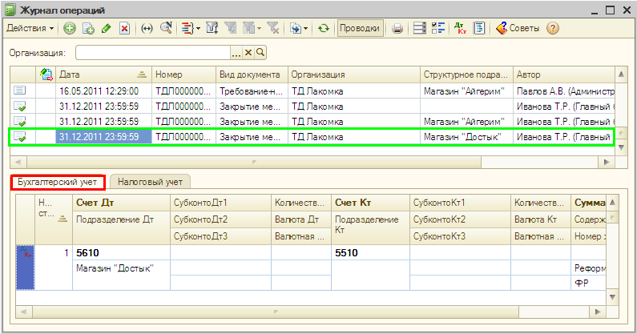

Операции, введенные всеми способами, отображаются в журнале операций (меню Операции— Журнал операций).

В нижней части журнала операций показываются проводки, включенные в выделенную операцию. Проводки бухгалтерского учета отражаются на закладке Бухгалтерский учет, проводки налогового учета — на закладке Налоговый учет.
Проводки бухгалтерского учета и проводки налогового учета доступны к просмотру раздельно через специализированные журналы: меню Операции— Журнал проводок (бухгалтерский учет), меню Проводки — Журнал проводок (налоговый учет).
Только что Вы познакомились с журналами операций и проводок.
Из следующего раздела Вы узнаете, как оформить покупку товаров.